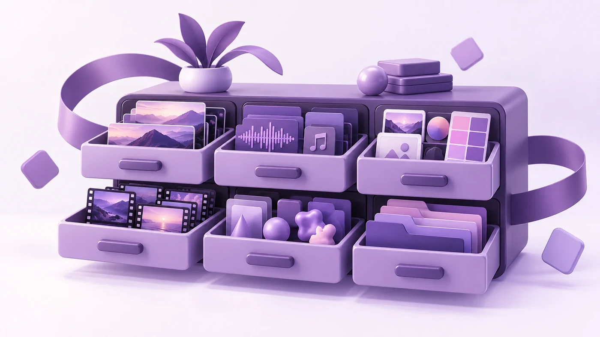

O que me mandar para o primeiro corte ficar perto

A maior parte do que atrasa uma montagem decide-se antes de eu abrir os ficheiros. Depende do que chegou.
Para que serve
Onde vai passar e que duração tem de ter moldam a montagem mais do que o material. Um filme de noventa segundos para o site e um corte de quinze para redes sociais começam de maneira diferente, por isso, se precisa dos dois, diga-o logo. Se ainda não sabe a duração, diga isso também.
Há duas coisas que costumam ficar de fora: se tem de funcionar sem som, como a maior parte dos feeds e dos ecrãs de feiras, e em que línguas precisa dele. São baratas de planear e incómodas de acrescentar depois.
Mande tudo
É tentador mandar só as takes de que gostou. As partes de que preciso são muitas vezes as que cortaria: o segundo antes de alguém falar, a pausa em que baixa os olhos, o b-roll aborrecido que salva uma transição. Mande o cartão todo. O volume não me incomoda.
Originais, não exportações
Mande os ficheiros como saíram da câmara, não uma cópia comprimida nem algo que tenha passado pelo WhatsApp. Cada exportação deita dados fora, e isso nota-se quando o plano é tratado na cor, abrandado ou cortado na vertical. Se só existir uma cópia comprimida, dá para trabalhar. Basta dizer-mo cedo.
Áudio e câmaras
Se alguém usou microfone de lapela ou houve boom, esse áudio costuma estar num ficheiro à parte. Mande-o, porque o diálogo é o que o público perdoa menos. Se esteve mais do que uma câmara a gravar, mande todas sem cortes. Sincronizo-as pelo som que se sobrepõe, e os clips aparados tornam isso um trabalho manual.
Coisas da marca
- Um logótipo vetorial: SVG, AI ou EPS, não um PNG tirado do site.
- Fontes e cores, ou o manual de marca, se existir.
- Duas ou três referências, com uma frase sobre o que gosta em cada uma. Um estilo que não quer é igualmente útil.
A música e o stock são comigo
Não precisa de encontrar nem de comprar uma faixa. Trabalho com bibliotecas premium pagas, por isso a procura e a licença são do meu lado. Uma direção chega: "calma, sem voz, nada corporativo" já serve. Se já comprou uma faixa de que gosta, mande a licença, porque pode não cobrir as versões para redes sociais.
Faltarem planos também não tem de atrasar nada. Licencio stock nas mesmas bibliotecas, por isso diga-me o que falta em vez de esperar que passe a existir.
Uma pessoa aprova
Um nome com a palavra final, ou um grupo que manda as notas em conjunto. Cinco pessoas a responder em separado, cada uma a uma versão diferente, é o que acrescenta dias.
Mande o resto e o primeiro corte vai ficar perto o suficiente para falarmos a sério.
← Todos os artigos